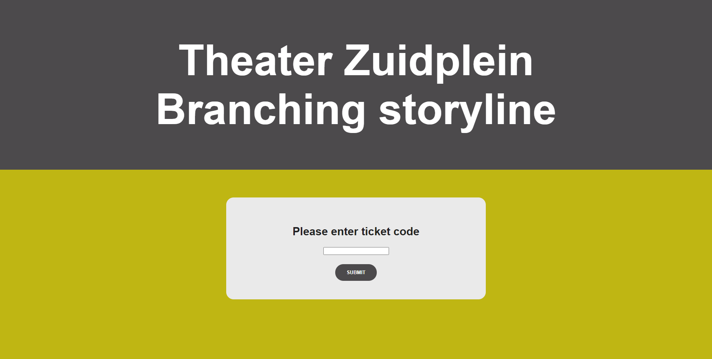
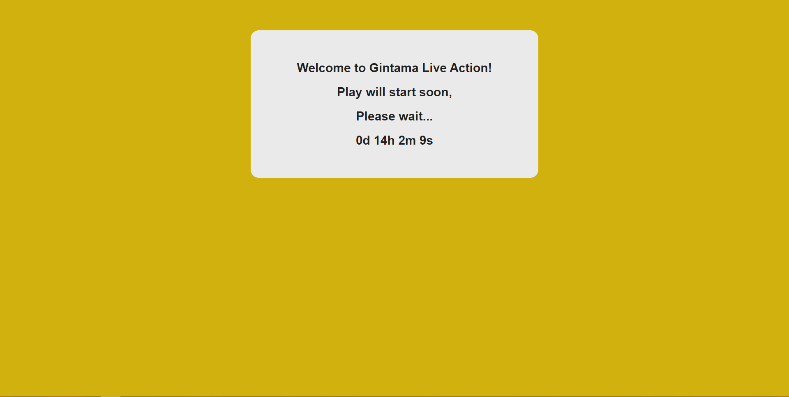
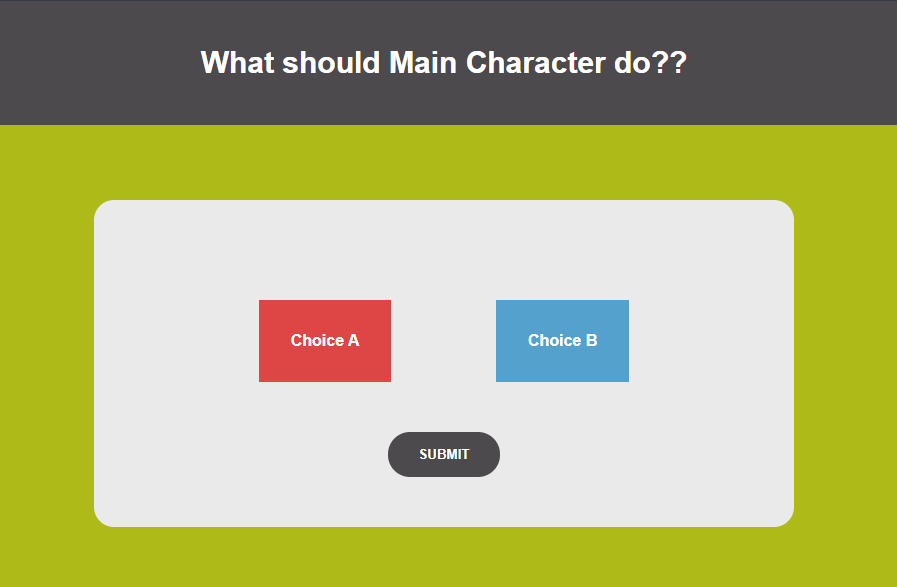
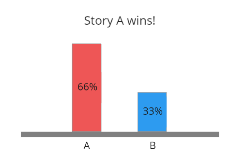

Storyline taptile
Wegens Corona, is het niet meer mogelijk om de theater te bezoeken.
Daarom heeft Theater zuidplein ervoor gekozen om de stduenten van Hogeschool uit te nodigen om een AR, VR of een fysiek product te maken,
zodat je alsnog de tentoonstellingen op lange afstand kunt genieten.
Hiervoor hebben de studenten een applicatie ontwikkelt, genaamd: Storyline Taptile
De Storyline Taptile geeft je de mogelijkheid om zelf je verhaal te bepalen.
Je kan dan naar meerdere kanten op.
Of het verhaal nou goed is of niet, dat bepaal jij zelf!
Deelnamen
Je wilt meedoen aan de Story Taptile, maar hoe werkt dat dan?
Om te beginnen moet je een verificatie code krijgen van Theater zuidplein.
Je krijgt de verificatie code mee met de ticket van je tentoonstelling.

Ga daarna naar de Storytelling Taptile app en vul je verificatiecode in. Let op!
je code is alleen 1 keer te gebruiken!
Als dat allemaal is gelukt, dan wordt je begeleid naar de wachtruimte.
Als de Timer afgelopen is, dan ben je klaar om te beginnen.

Tijdens de tentoonstelling wordt er 1 minuut van tevoren aangegeven welke verhaal je wilt volgen.
Je kan nog altijd van verhaal wisselen voordat je op de knop "submit" drukt.

Als iedereen haar/zijn verhaal heeft gekozen, wordt de uitslag bekend gemaakt.

Over CMGT
De studenten van CMGT zijn één van de meest creatieve studenten op het Hogeschool Rotterdam.
Naast het programmeren, vinden ze het ook leuk om creatieve concepten te bedenken en uit te voeren.
Van web, mobile en games tot Internet of Things.
Ga naar
CMGT
voor meer informatie.
Steun CMGT
Door CMGT te volgen via sociaal media: instagram, facebook en twitter. helpt u de studenten om verder te werken aan het product.